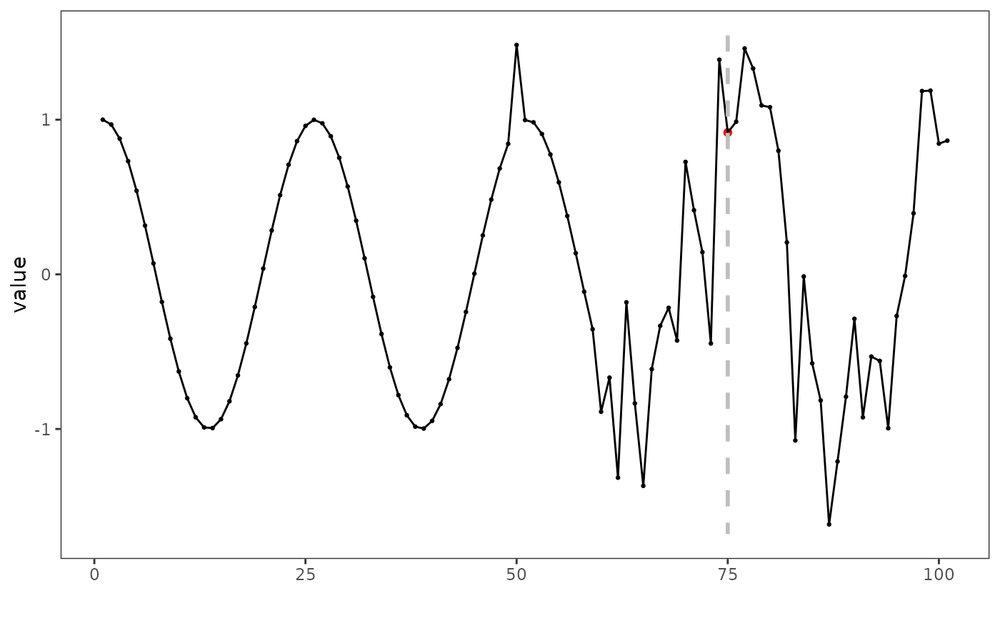

is a drift detection method based on the Hoeffding’s inequality. HDDM_A uses the average as estimator. doi:10.1109/TKDE.2014.2345382.
Arguments
- drift_confidence
Confidence to the drift
- warning_confidence
Confidence to the warning
- two_side_option
Option to monitor error increments and decrements (two-sided) or only increments (one-sided)
Examples
library(daltoolbox)
library(harbinger)
library(ggplot2)
set.seed(6)
#loading the example database
data(har_examples)
#Using example 1
dataset <- har_examples$example1
cut_index <- 60
srange <- cut_index:row.names(dataset)[nrow(dataset)]
drift_size <- nrow(dataset[srange,])
dataset[srange, 'serie'] <- dataset[srange, 'serie'] + rnorm(drift_size, mean=0, sd=0.5)
head(dataset)
#> serie event
#> 1 1.0000000 FALSE
#> 2 0.9689124 FALSE
#> 3 0.8775826 FALSE
#> 4 0.7316889 FALSE
#> 5 0.5403023 FALSE
#> 6 0.3153224 FALSE
plot(x=row.names(dataset), y=dataset$serie, type='l')
# setting up time series regression model
model <- hanct_kmeans()
# fitting the model
model <- fit(model, dataset$serie)
# making detection using hact_kmeans
detection <- detect(model, dataset$serie)
# filtering detected events
print(detection[(detection$event),])
#> idx event type
#> 50 50 TRUE anomaly
#> 66 66 TRUE anomaly
#> 76 76 TRUE anomaly
#> 79 79 TRUE anomaly
#> 89 89 TRUE anomaly
#> 92 92 TRUE anomaly
# Drift test
drift_evaluation <- data.frame(!(detection$event == dataset$event)) * 1
drift_evaluation[cut_index:nrow(drift_evaluation),] = 1
model <- fit(hcd_hddm(drift_confidence=10^-30), drift_evaluation)
detection_drift <- detect(model, drift_evaluation)
grf <- har_plot(model, dataset$serie, detection_drift)
grf <- grf + ylab("value")
grf <- grf
plot(grf)
